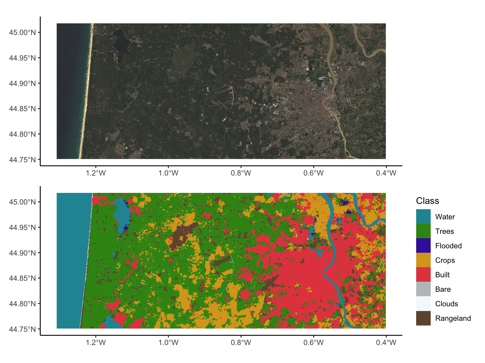

library(tidyverse)
library(terra)
library(sf)
library(patchwork)
library(tidyterra)
landcover_Bordeaux<-as.factor(rast("S2Data/Bordeaux_S2/T30TXQ_20230821T105629_Classification.tif"))
Bordeaux_FileNames_10m<-list.files("S2Data/Bordeaux_S2/",full.names = T,pattern = "10m")
Bordeaux_FileNames_20m<-list.files("S2Data/Bordeaux_S2/",full.names = T,pattern = "20m")
Bordeaux_10m<-rast(Bordeaux_FileNames_10m)
Bordeaux_20m<-rast(Bordeaux_FileNames_20m)
p1<-ggplot()+
geom_spatraster_rgb(data=Bordeaux_10m,
r=3,g=2,b=1,
max_col_value = 5000,
interpolate=T)+
theme_classic()
landcover_Bordeaux_fct<-landcover_Bordeaux %>%
mutate(`30T_20230101-20240101`=factor(as.factor(case_when(`30T_20230101-20240101`==1~"Water",
`30T_20230101-20240101`==2~"Trees",
`30T_20230101-20240101`==4~"Flooded",
`30T_20230101-20240101`==5~"Crops",
`30T_20230101-20240101`==7~"Built",
`30T_20230101-20240101`==8~"Bare",
`30T_20230101-20240101`==9~"Snow",
`30T_20230101-20240101`==10~"Clouds",
`30T_20230101-20240101`==11~"Rangeland")),
levels=c("Water",
"Trees",
"Flooded",
"Crops",
"Built",
"Bare",
"Snow",
"Clouds",
"Rangeland")
))
coltab(landcover_Bordeaux_fct[[1]])<-NULL
p2<-ggplot()+
geom_spatraster(data=landcover_Bordeaux_fct)+
scale_fill_manual(values=c("#2494a2",
"#389318",
"#3d26ab",
"#DAA520",
"#e4494f",
"#bec3c5",
"#f5f8fd",
"#70543e"))+
labs(fill="Class")+
theme_classic()
p1/p2